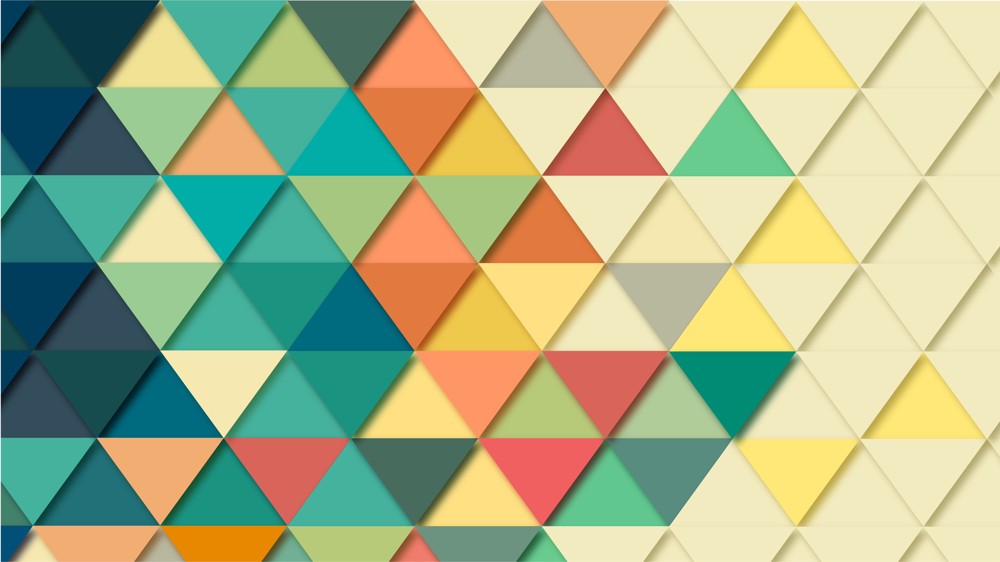

The dream
Have you ever had a dream ?
Mine is quite simple.
Or actually, my dream job is...
All I want is to provide various services to start-ups, SMEs and entrepreneurs.
-

Responsive websites
From the simplest static website to more complicated ones and websites with CMS (Wordpress and homemade small CMS in Java) and databases.
-

Mobile Applications
Android and IOs.
-

Software development
Any kind of software a company may need to help them manage their business and/or operations.
-

Graphical identity
Logo, business cards, loyalty cards...